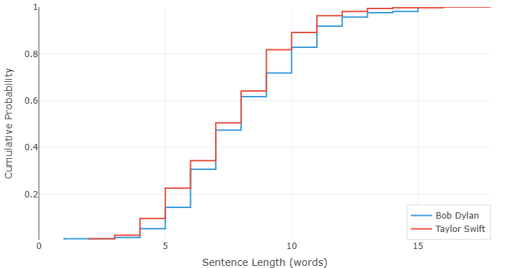
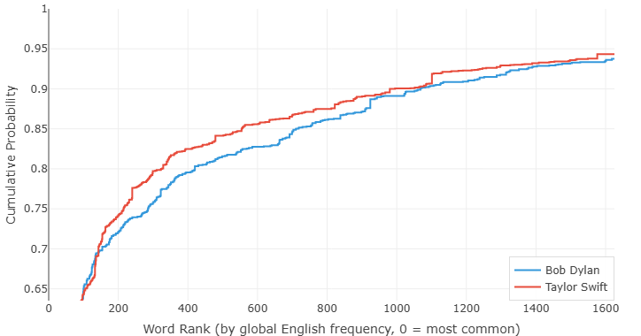

鲍勃·迪伦 vs 泰勒·斯威夫特 — 两代人的歌词，用数据说话
2016 年，鲍勃·迪伦拿了诺贝尔文学奖。消息一出，世界裂成两半：一半人觉得早该给了，另一半觉得歌词不配跟小说和诗歌放在一起。不管怎样，瑞典文学院的态度很明确——在他们眼里，《答案在风中飘》和《像一块滚石》的歌词，就是文学。
泰勒·斯威夫特没拿过诺贝尔。但她拿了十四座格莱美，卖了超过两亿张唱片，靠着一手把歌词写成日记的本事撑起了整个职业生涯。粉丝像考古一样拆解她的歌词——每个代词、每个比喻、每个大写字母都不放过。如果说迪伦是先知式的写歌人，斯威夫特就是写日记的那个。一个用寓言说话，一个用日记本说话。
我们收集了两人的一批歌词——迪伦这边有《穿越绿山》《直到我爱上你》《汉迪丹迪》等，斯威夫特那边有《爱情故事》《空格》《通通甩掉》《反英雄》等——一起扔进了分析器。图表讲出的故事，关于简洁、词汇量，以及数据里一个非常诡异的凸起。
图一：泰勒，短

泰勒·斯威夫特的句子，平均比鲍勃·迪伦的短。她的曲线升得更快，紧贴着左边走——更多歌词在更少的词数内收束。
这不是批评。流行音乐的歌词不靠铺展，靠压缩。一句好的流行歌词，用最少的词打出最干净的情感一拳。"这是一段爱情故事，宝贝，说好就行。""我们永远永远永远不复合。""通通甩掉，通通甩掉。"这些句子之所以成立，恰恰因为它们短——好唱，好记，好截屏发朋友圈。短句是流行音乐的计量单位。
迪伦的句子明显更长。他不为副歌的爆发点写作，他为口琴独奏中缓慢展开的段落写作。"我翻越绿山，睡在溪边 / 天堂在我脑中燃烧，我做了一个巨兽般的梦。"这句拉开了，往后靠了靠，邀你跟着它走到一个不知道会是哪里的地方。迪伦的长句子不是偶然——是对叙事密度所做的结构性承诺。他每行要说的话更多，并且不介意让你多等一会儿。
不是说斯威夫特不写长句——她写。"我站在夏夜的阳台上。"比迪伦很多句子都长。但整体分布倾斜于短的那一侧，整条曲线反映的是另一种本能：快点说到点子上，一拳打准，然后走人。
图二：迪伦的词汇更富——泰勒有个秘密

这张开始有意思了。先说大格局：迪伦的词汇量更丰富。他的曲线在大部分区间里趴在斯威夫特右边——常用词用得相对少，生僻词用得更多。一个以超现实意象、圣经隐喻和"世界末日钟""肉身色的圣油"这类词为生的人，词汇量自然大。迪伦一辈子都在找那个出人意料的词，数据说他是对的。
斯威夫特的词汇没那么广，但也不算窄。她写来写去就是爱情、心碎、名声、自我厌恶——公平地讲，这四个话题之间有大量重叠。但在这个范围内，她的用词很精准。常见词区的曲线更平滑，说明作者非常清楚哪些日常词汇最扛重量。
好，现在仔细看斯威夫特的曲线。看到了吗？在词频排名大约第 1094 到 1101 之间——也就是人类最常用英语词第 1094 到 1101 名的区域——她的曲线突然猛地往上一跳。不是缓慢上升，是一抖，一个激灵。
这种跳跃意味着什么？意味着有一个特定的词——或者一小撮关系很近的词——被泰勒·斯威夫特用到了极不寻常的频率。不寻常到能在一张累积分布图上砸出一个肉眼可见的坑。曲线其他地方都在平缓上升，每个频段的词都贡献一点，不分高下。但到了这个位置，出事了：一个词突然冒出来，独自扛起了好长一段比例。
我们要是去 COCA 词频表里查一下就能知道是哪个词。但就算不查，我们也能判断：这不是一个常见词。排名 1100 左右，说明它远在核心词汇之外——不是"爱"、不是"心"、不是"宝贝"。它具体到足以构成一个主动的选择，又没有冷僻到只用一两次。它是一个她选择反复回来的词。
你想想。大多数词曲作者都有"招牌词"——迪伦有"小丑""贼""风""滚"。斯普林斯汀有"公路""黑暗""出生"。数据在说，斯威夫特至少有一个词，她倚重到能在统计图表上凿出一个坑。这种事只有数据能告诉你。你把她的歌全听一遍，可能永远意识不到——但数字不会说谎。
先知和写日记的人
迪伦和斯威夫特代表了歌词创作的南北两极，两张图抓住了这两个极。迪伦的长句和丰富词汇，是一个把歌词当画布的人——有空间去涂抹，有空间去游荡，有空间去惊吓。斯威夫特的短句、平顺的词汇曲线，是一个把歌词当信息的人——准确，即时，忘不掉。
没有哪种更好，只是工具不同、用途不同。迪伦想让你想，斯威夫特想让你感受。